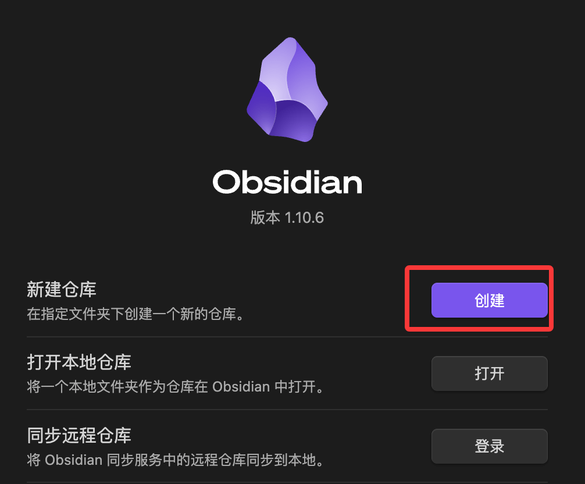
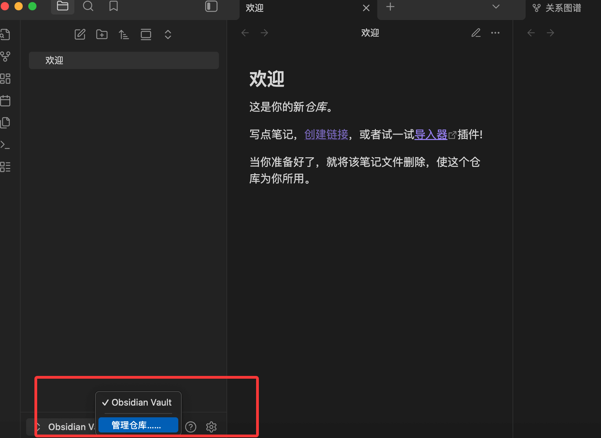
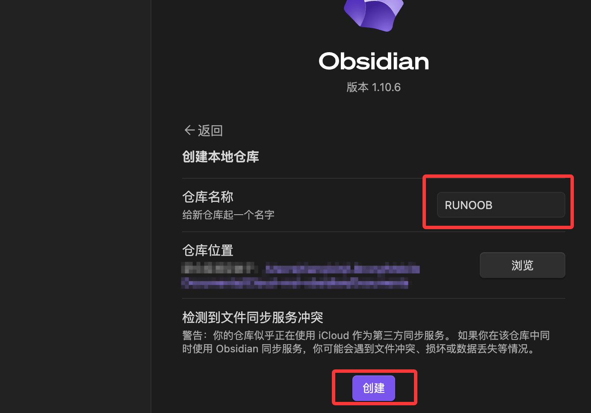

Obsidian 最初のVault
Vault は Obsidian において最も重要な概念です。
Vault = フォルダ：库実は、あなたのコンピュータ上にある普通のフォルダで、すべてのノートファイルを保存するためのものです。
初めて Obsidian を開いたときは、「新しいVaultを作成」の欄で「作成」ボタンを選択します：
。
すでに開いている場合は、左側の最下部にある Obsidian Vault をクリックすると、作成済みのVaultを管理したり、Vaultを再設定したりすることもできます：

次に、ナレッジベースに名前を付け（例：「私の第二の脳」）、簡単に見つけられるローカルフォルダの場所を選択します（例：デスクトップまたはドキュメントフォルダ内の Obsidian Vaults）。
作成すると、現在のVault名が表示されます。たとえば私の RUNOOB です。デフォルトの「ようこそ」ファイルの名前を変更して、最初のノートを書き始めることができます：

ファイル名を次のように変更します：RUNOOB-Obsidian 使用チュートリアル、次に以下の Markdown コンテンツを記述します：
### 什么是 Obsidian？ Obsidian 本质上是一个**强大的笔记应用**，但它不仅仅是记录文字。它是一种将你的笔记、想法和知识点连接起来的工具，旨在构建一个**网状的、可搜索的、私人的知识网络**，就像你大脑中的神经元连接一样。 * **本地文件存储：** Obsidian 的所有文件都以纯文本的 **Markdown** 格式存储在你的本地电脑上。这意味着： * **安全可控：** 你的数据完全属于你自己，不需要依赖任何云服务商。 * **永不过时：** Markdown 是最通用的纯文本格式，即使 Obsidian 停止服务，你仍然可以用任何文本编辑器打开你的笔记。 ### 为什么要用 Obsidian？（核心优势） 你可能用过 Word、Evernote 或 Notion，为什么还要选择 Obsidian？ | 优势 | 描述 | 对你的好处 | | :--- | :--- | :--- | | **双向链接 (Bi-directional Linking)** | 使用 `[[笔记名]]` 语法，你可以将笔记像网页一样连接起来。 | 你能轻松发现知识点之间的**关联**，将零散的想法变成一个完整的知识体系。 | | **关系图谱 (Graph View)** | 将所有笔记和连接以可视化网络图的形式展示出来。 | 直观地看到你的知识网是如何成长的，找到未连接的“孤岛”笔记。 | | **纯文本与开放生态** | 基于 Markdown 和本地文件。 | 跨平台兼容性强，未来可导出性高，方便配合其他工具使用。 | | **高度可定制** | 拥有数千个社区插件和主题。 | 无论是学生、程序员还是作家，你都可以根据需求定制功能和外观。 |
表示結果は次のとおりです：

注意：あなたのすべての Markdown ファイル（.md拡張子）はすべてこのフォルダに保存されます。Obsidian はこれらのファイルを読み取り・編集するための単なるツールです。
Vault のディレクトリ構造
Vault を作成すると、フォルダ内に隠しディレクトリが現れます。.obsidian：
MyVault/ ├── .obsidian/ ← Obsidian 的配置文件 │ ├── plugins/ ← 安装的插件存放在这里 │ ├── themes/ ← 主题文件 │ ├── snippets/ ← 自定义 CSS 片段 │ └── app.json ← 主配置文件 ├── 你的第一篇笔记.md └── ...
開発者向けのヒント：.obsidianフォルダは Git 管理に入れることをお勧めします。そうすれば、プラグイン設定、ショートカットキー設定、テーマの好みがすべてバージョン管理され、パソコンを替えても完全に復元できます。唯一の例外は.obsidian/workspace.json、現在開いているタブの状態を記録しており、追加することができます.gitignore。
複数のVaultの使用シーン
Obsidian は相互に独立した複数の Vault の作成をサポートしています：
| Vault | 用途 |
|---|---|
| 個人用ナレッジベース | 技術学習、読書ノート、思考の記録 |
| 仕事用プロジェクトVault | 現在の会社のプロジェクトで、機密情報が含まれる場合は個人用Vaultと分ける |
| 執筆用Vault | 長文執筆専用で、プラグイン設定がナレッジベースとは異なる |
初心者にとっては、1つのVaultから始める、過度に設計しないこと。
やってみよう：最初のノートを作成する
- 按 Cmd/Ctrl + N新しいノートを作成
- ファイル名を入力します。例：Obsidian についての最初の考え
- Enter キーを押して確定すると、編集エリアに入ります
- 次の内容を入力してみてください：
実例
今日から Obsidian の学習を始めます。これは[[Markdown]]に基づくノートツールです。
## これを何に使うつもりか
- [ ]技術学習ノートの整理
- [ ]毎日の作業ログを記録
- [ ]面接の知識ポイントを蓄積
## 最初の感想
以前使っていたツールと比べて、最大の違いは双方向リンクの概念です。
注意[[Markdown]]このリンクは、マウスを乗せるとプレビューポップアップが表示され、クリックすると「Markdown」という名前のノートにジャンプします。
このノートがまだ存在しない場合は、クリックすると自動的に作成されます。
双方向リンク付きの最初の Obsidian ノートが完成しました。
適用シーンと使用の境界
Obsidian は非常に強力ですが、万能ではありません。適用範囲を理解すると、合理的なツール選択の助けになります。
Obsidian が得意なこと
- 技術知識の蓄積：特定のフレームワークの理解、ハマった経験、解決策を記録し、リンクを通じて関連知識を結びつける
- 学習ノート：書籍や記事を読むときに抜粋やコメントを残し、自分の知識として蓄積する
- 毎日の作業ログ：Daily Notes を使って毎日やったことや遭遇した問題を記録する
- 執筆下書き：Obsidian で素材を蓄積し、文章を磨く
- 個人プロジェクト計画：個人の学習計画や副業プロジェクトを追跡する
Obsidian が苦手なこと
- チームのリアルタイムコラボレーション：複数人が同時に同じファイルを編集すると競合が発生しやすいため、Notion の方が適している
- 構造化データ管理：複雑なデータベースやスプレッドシートには Notion/Airtable を使う
- タスク管理の主力ツール：プラグインによるサポートはあるが、専門的なタスク管理には Todoist/Linear を推奨する
- 大規模なマルチメディアコンテンツ：動画や大量の画像などは、保存や管理が不便である
クリックしてノートを共有
ノートはこの記事の内容を拡張したものである必要があります！
記事投稿は、ここをクリック
登録招待コードの取得方法
ノートを共有する前にログインが必要です！
登録招待コードの取得方法